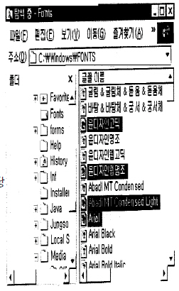
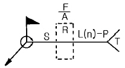

침투비파괴검사산업기사(구) (2003-03-16 기출문제)
1과목: 침투탐상시험원리
1. 표면에 오염물질이 존재함에도 침투제막이 균일하고 일정하게 전표면에 걸쳐 도포되도록 해줄 수 있는 침투제의 기능을 옳게 설명한 것은?
- 점성이 낮다.
- 점성이 높다.
- 적심능력이 크다.
- 증발효과가 적다.
(정답률: 알수없음)

2. 다음 중 모세관 현상을 결정하는 요인이 아닌 것은?
- 점착력(force of adhesion)
- 적심성(wetting ability)
- 표면장력(surface tension)
- 점성(viscosity)
(정답률: 알수없음)
3. 맞대기 용접부의 덧살(Reinforcement)을 그라인더로 제거해서 판 형태로 만들었을 때 덧살이 제거된 용접부 검사에 다음 중 가장 적합한 비파괴검사법은?
- ET와 UT
- UT와 MT
- MT와 PT
- PT와 LT
(정답률: 알수없음)
4. 침투탐상시험으로 검출이 곤란한 불연속은?
- 표면의 라미네이션
- 내부의 단조겹침
- 표면균열
- 표면겹침
(정답률: 알수없음)
5. 다음 중 침투탐상시험의 일반적인 순서는? (전처리 생략)
- 현상처리 - 침투처리 - 세척처리
- 침투처리 - 세척처리 - 현상처리
- 건조처리 - 현상처리 - 세척처리
- 침투처리 - 건조처리 - 현상처리
(정답률: 알수없음)
6. 침투탐상시험시 침투액의 구비조건에 해당하지 않는 것은?
- 표면장력이 낮을 것
- 인화점이 높을 것
- 적심성이 좋을 것
- 점성이 낮을 것
(정답률: 알수없음)
7. 형광침투탐상시험법에서 현상액을 적용하기 전에 침투액의 제거를 확인하는 가장 적합한 방법은?
- 흡수지로 표면을 빨아내 본다.
- 표면을 압축공기로 불어낸다.
- 표면을 화학적으로 부식시켜 본다.
- 자외선조사등으로 표면을 관찰한다.
(정답률: 알수없음)
8. 시험체의 탐상결과를 관찰시 시험체 주위에 형광 물질이 있다는 사실과 관계가 먼 것은?
- 세척이 잘 되지 않았다.
- 유화시간이 충분하지 못했다.(후유화제법에서)
- 다공성 물질에 침투제가 도포되어 있다.
- 침투시간이 과다하였다.
(정답률: 알수없음)
9. 침투액의 재질은 어떤 경우에는 부식성이 없는 재료를 사용해야 한다. 특히 티타늄과 니켈 함량이 높은 강의 경우는 침투액의 성분에 대하여 규격에서 최소 량을 정하고 있다. 다음 중 그 성분에 해당하는 것은?
- S, Cl
- Cd, Pb
- Fe, Ni
- Si, W
(정답률: 알수없음)
10. 초음파에 대한 설명으로 올바른 것은?
- 파장은 짧으나 빛과 달리 직진성이 없다.
- 물체내의 원거리에서도 초음파는 강도가 일정하다.
- 고체와 액체의 경계면에서 반사, 굴절 등의 성질이 있다.
- 초음파의 전파속도는 전달되는 물질의 종류와 초음파의 종류에 관계없이 일정하다.
(정답률: 알수없음)
11. 다음 중 단조물에서 주로 발견되는 불연속은?
- 용입 부족
- 냉각 균열
- 수축 균열
- 겹침
(정답률: 알수없음)
12. 시험체의 재질이 연강일 때 자주 사용되는 전처리 방법이 아닌 것은?
- 알카리세척
- 모래분사법
- 증기세척
- 용제분무법
(정답률: 알수없음)
13. 침투탐상시험에 사용하는 수성유화제의 설명은?
- 물을 첨가하지 않고 사용하는 유화제
- 형광물질을 첨가한 유화제
- 물을 첨가해서 사용하는 유화제
- 솔벤트를 첨가해서 사용하는 유화제
(정답률: 알수없음)
14. 침투탐상시험 중 화재 위험성이 가장 큰 침투제와 현상제로 조합된 것은?
- 후유화성 염색침투제, 건식현상제
- 용제제거성 염색침투제, 속건식현상제
- 수세성 형광침투제, 수용성 습식현상제
- 후유화성 형광침투제, 건식현상제
(정답률: 알수없음)
15. 다음 중 침투탐상시험시 탐상감도에 큰 영향을 줄 수 있으므로 가장 주의하여 처리해야 하는 검사 과정은?
- 전처리
- 침투처리
- 과잉침투제 세척처리
- 현상처리
(정답률: 알수없음)
16. 침투탐상시험시 탐상표면에서 전처리 세척이 원만하게 지켜지지 않았을 때 표면불연속을 가릴 수 있는 이물질 중 가장 정도가 심한 것은?
- 페인트
- 스케일
- 스패터
- 녹
(정답률: 알수없음)
17. 수세성 염색침투탐상시험을 수행하는 경우 가장 유의해야 할 사항은?
- 잉여 침투액이 완전히 제거되었는지를 확인하기 위해 자외선등을 사용해야 한다.
- 검사 대상물에 도포된 침투제를 제거할 때 과도한 세척이 되지 않도록 해야 한다.
- 검사 대상물에 침투제를 도포하고 지정된 침투처리 시간을 초과하지 않도록 각별히 유의한다.
- 규정된 침투처리 시간 후에 유화제를 도포하되 유화처리 시간을 반드시 준수해야 한다.
(정답률: 알수없음)
18. 다음 중 침투탐상시험과 관계없는 성질은?
- 점도
- 표면장력
- 열전도도
- 응집력
(정답률: 알수없음)
19. 침투탐상시험을 실시하였을 경우 주조품의 표면에 존재하는 Cold Shut에 의해서 나타나는 지시의 형태는?
- 커다란 기공형상의 지시로 나타난다.
- 군집된 형상의 지시로 나타난다.
- 점형 또는 거의 둥근 형태의 선형지시로 나타난다.
- 깊은 형태의 지시로 나타난다.
(정답률: 알수없음)
20. 침투탐상시험법 중에서 수도와 전원이 없는 경우에 가장 적당한 탐상법은?
- 용제제거성 염색침투탐상
- 용제제거성 형광침투탐상
- 후유화성 형광침투탐상
- 후유화성 염색침투탐상
(정답률: 알수없음)
2과목: 침투탐상검사
21. 다음 중 탐상감도가 가장 우수한 검사법은?
- 수세성 형광침투탐상시험법
- 후유화성 형광침투탐상시험법
- 용제제거성 형광침투탐상시험법 - 속건식현상
- 용제제거성 형광침투탐상시험법 - 건식현상
(정답률: 알수없음)
22. 용제제거성 침투탐상검사시 행하는 전처리 방법중 증기탈지법으로는 효과적으로 제거될 수 없는 표면의 오염물질은?
- 그리이스
- 기계가공 오물
- 기름
- 녹
(정답률: 알수없음)
23. 표면이 거친 주강품의 검사에 적당한 침투탐상시험은?
- 수세법
- 유화제법
- 용제법
- 무현상법
(정답률: 알수없음)
24. 용접부의 침투탐상시험시 전처리할 때 일반적으로 이용되는 방법이 아닌 것은?
- 솔질
- 증기세척
- 연삭
- 용제세척
(정답률: 알수없음)
25. 침투제에서 표면장력은 침투제에 많은 영향을 미치게 되는데 다음 중 표면장력이 가장 큰 물질은?
- 에테르
- 에틸알콜
- 나프타
- 물
(정답률: 알수없음)
26. 다음 중 마무리 가공 불연속으로 분류할 수 있는 것은?
- 피로균열
- 응력부식균열
- 라미네이션
- 열처리균열
(정답률: 알수없음)
27. 다음 중 의사지시가 아닌 것은?
- 산화스케일 지시
- 나사산 지시
- 기계적 불연속지시
- 다공성 재료의 지시
(정답률: 알수없음)
28. 침투탐상검사 결과 의사지시가 나타날 수 있는 경우는?
- 과도한 물세척
- 충분치 못한 현상제 적용
- 저온 침투제 적용
- 거친 표면
(정답률: 알수없음)
29. 현상제 첨가 물질의 화학 성분중 전해질로 사용되는 물질은?
- MgCO3
- Mg2SO4
- Fe2O3
- SiO2
(정답률: 알수없음)
30. 알루미늄 주물품을 침투탐상한 결과 작은 점들의 그룹이 나타났다면 다음 중 어떤 불연속으로 추측되는가?
- 미세 수축공
- 콜드랩
- 피로균열
- 부식균열
(정답률: 알수없음)
31. 침투탐상시험시 사용하는 표준시험편의 특성에 대해 설명한 것중 틀린 것은?
- B형 시험편은 A형 시험편에 비해 장기간 반복 사용할 수 있는 이점이 있다.
- A형 시험편은 B형 시험편에 비해 균열형상이 자연 균열에 가깝다.
- A형 시험편은 B형 시험편에 비해 균열의 크기 조절이 쉽다.
- B형 시험편은 깊이가 일정한 균열을 재현성있게 만들수 있다.
(정답률: 알수없음)
32. 다음 중 침투탐상시험 현상제의 기능은?
- 불연속부의 형상을 나타내게 하는데 도움을 준다.
- 불연속부의 침투액을 오염시킨다.
- 침투액에 형광을 첨가시킨다.
- 지시가 빨리 나타나는 것을 억제하는데 도움을 준다.
(정답률: 알수없음)
33. 수세성 침투액을 사용할 때 중요한 주의점은?
- 시험체의 세척작업시 완전히 세척된 것을 확인한다.
- 지시된 침투시간이 넘지 않는 것을 확인한다.
- 시험체의 과도한 세척을 피한다.
- 유화제의 과도한 사용을 피한다.
(정답률: 알수없음)
34. 다음 중 모세관현상을 일으키는 요인과 가장 관계가 적은 것은?
- 응집력
- 침투력
- 점성
- 접착력
(정답률: 알수없음)
35. 염색침투탐상법으로 탐상한 결과 지시의 길이가 0.32인치였다. 실제 결함의 길이로 추정할 수 있는 것은?
- 0.35인치이다.
- 0.32인치이거나 작다.
- 0.32인치보다 크다.
- 단속된 0.32인치이다.
(정답률: 알수없음)
36. 다음 중 가장 감도가 우수한 염색 침투제의 색깔로 맞는 것은?
- 푸른색
- 황색
- 황록색
- 검붉은색
(정답률: 알수없음)
37. 가장 널리 사용되고 있는 침투제의 일반적인 비중은?
- 약 0.5
- 약 1.0
- 약 1.5
- 약 2.0
(정답률: 알수없음)
38. 에어로졸 캔의 탐상제는 온도가 매우 낮으면 탐상제의 분사상태가 나빠진다. 이 경우 처리 방법으로 적당한 것은?
- 시험면을 가열한 후 탐상제를 적용한다.
- 불에 가까이 대고 달군다.
- 캔을 30℃ 정도의 물로 데운다.
- 탐상제의 성능저하가 예상되므로 무조건 폐기한다.
(정답률: 알수없음)
39. 침투탐상시 침투제 선정에 대한 설명 중 틀린 것은?
- 수세성 염색 침투제의 감도가 제일 낮다.
- 수세성 형광 침투제가 형광시험법 중 가장 빠른 방법이다.
- 침투제의 요구 감도가 비용의 중요 인자이다.
- 용제제거성 형광 침투제가 밀착된 균열 검출에 제일 좋다.
(정답률: 알수없음)
40. 하전입자의 흡착성을 이용한 침투탐상법에서 현상처리에 사용하는 현상제는?
- 알코올
- 솔벤트
- 탄산칼슘
- 탄산나트륨
(정답률: 알수없음)
3과목: 침투탐상관련규격
41. 침투탐상시험을 실시할 때 수세성 침투제를 제거하는데 ASME 규격에서 규정하고 있는 최대 수압은?
- 20psi
- 30psi
- 40psi
- 50psi
(정답률: 알수없음)
42. KS B 0816에서 자외선조사장치는 필터 또는 관구의 앞면에서 38cm되는 거리에서 자외선 강도가 얼마 이상이어야 하는가?
- 300μW/cm2
- 500μW/cm2
- 800μW/cm2
- 1000μW/cm2
(정답률: 알수없음)
43. KS B 0816에서 규정한 A형 대비시험편을 제조할 경우 KSD 6701에서 규정한 A2024P를 재료로 사용하는데 판의 두께는 얼마로 규정하고 있는가?
- 5∼7mm
- 8∼10mm
- 12∼15mm
- 16∼18mm
(정답률: 알수없음)
44. ASTM E 165에 따라 침투제 적용후 유화제를 적용하여 과잉침투제를 적정 시간동안 유화시킨 후 제거하는 후유화성 형광침투탐상에서 친수성 유화제를 사용할 경우 세척을 위한 물의 최대 분사압력은?
- 20psi
- 30psi
- 40psi
- 50psi
(정답률: 알수없음)
45. 웹서비스에서 제공되는 여러 가지 자원들에 대한 주소를 나타내는 것은?
- HTTP
- URL
- HTML
- XML
(정답률: 알수없음)
46. KS W 0914에 따르면, 사용 중인 침투액은 형광휘도시험을하였을 때 성능이 저하되면 폐기 처리한다. 그 기준은?
- 사용하지 않은 침투액 휘도의 95% 미만이었을 때
- 사용하지 않은 침투액 휘도의 90% 미만이었을 때
- 사용하지 않은 침투액 휘도의 85% 미만이었을 때
- 사용하지 않은 침투액 휘도의 50% 미만이었을 때
(정답률: 알수없음)
47. KS W 0914에서 분류한 침투액계 중 Type Ⅱ는 어느 것을 말하는가?
- 수세성침투액 계통
- 후유화성침투액 계통
- 형광침투액 계통
- 염색침투액 계통
(정답률: 알수없음)
48. 전 세계 인터넷 사용자 및 서비스 제공업체들이 각 분야 별로 공지 사항 및 최신 정보나 뉴스를 게시, 검색할 수 있게 해주는 서비스는?
- Gopher
- WWW(World Wide Web)
- WAIS
- USENET
(정답률: 알수없음)
49. 컴퓨터에서 정중하고 교양있는 네트워킹 통신과 행동을 무엇이라 하는가?
- emoticon
- netizen
- etiquette
- Netiquette
(정답률: 알수없음)
50. KS B 0816에 따른 현상처리 방법을 바르게 설명한 것은?
- 건식현상제는 시험체 전체를 똑같이 덮도록하고 소정의 시간을 유지한다.
- 속건식현상제의 적용은 침지법으로 한다.
- 습식현상제는 적용후에 천천히 배액하여 건조처리를 한다.
- 습식 및 속건식 현상제를 적용하는 경우는 시험체 표면이 완전히 보이지 않을 정도로 한다.
(정답률: 알수없음)
51. KS B 0816에 따른 침투탐상시 전수검사를 수행한 시험품에 합격표시가 필요한 경우의 표시 방법중 틀린 내용은?
- 각인 또는 부식에 의한 표시를 할 때에는 P의 기호를 사용한다.
- 각인 또는 부식에 의한 표시가 곤란할 때는 착색(적갈색)한다.
- 시험품에 표시할 수 없을 경우는 시험기록에 기재한 방법에 따른다.
- 시험품에 ⓟ의 기호 또는 착색(황색) 표시한다.
(정답률: 알수없음)
52. KS 규격에 의한 염색침투탐상시험중 수세성 및 후유화성침투액을 사용할 경우, 필요없는 장치 혹은 기구는?
- 스프레이 노즐
- 수압 및 유량을 가감할 수 있는 구조
- 자외선조사 장치
- 일정 온도의 온수로 만들 수 있는 가열장치
(정답률: 알수없음)
53. KS W 0914에 의하면 침투탐상시험을 완료한 합격된 시험체에는 합격표시를 하여야 한다. 그 표시방법에 해당되지 않는 것은?
- 에칭
- 각인
- 도금
- 꼬리표
(정답률: 알수없음)
54. 그림과 같이 서로 떨어져 있는 여러 개의 파일(검정 바)을 선택하는 방법은?

- 해당 파일을 마우스로 클릭한다.
- 툰키를 누른 채 해당 파일을 마우스로 클릭한다.
- 툼키를 누른 채 해당 파일을 마우스로 클릭한다.
- 툴키를 누른 채 해당 파일을 마우스로 클릭한다.
(정답률: 알수없음)
55. KS B 0816에 의해 침투탐상시험을 할 때 유화제를 적용하는 방법중 틀린 것은?
- 침지
- 분무
- 교반
- 붓기
(정답률: 알수없음)
56. 다음은 PC의 소프트웨어에 대한 내용이다. 이 중 틀린 것 은?
- 하드웨어가 컴퓨터 시스템의 물리적인 측면을 나타내는데 비해 소프트웨어는 논리적인 동작을 나타 낸다.
- 소프트웨어는 흔히 프로그램이라고 하며, 이러한 프로그램은 방송이나 음악회의 프로그램처럼 작업의 진행 순서를 논리적으로 나열한 것이다.
- 프로그램에서 사용되는 명령어는 C언어, Visual Basic 언어 등의 프로그래밍 언어의 문법에 따라 작성되어야 하는데, 이렇게 컴퓨터 명령어를 이용하여 프로그램을 작성하는 일을 프로그래밍이라고 한다.
- 소프트웨어중의 시스템 소프트웨어는 특정 목적을 위해 작성한 프로그램으로 워드 프로세서, 웹 브라우저가 대표적인 예이다.
(정답률: 알수없음)
57. ASME Sec.V에 따라 형광 침투액을 사용하는 경우 관찰장치로서 원칙적으로 무엇을 설치하는가?
- 조도계를 설치하여야 한다.
- 자외선조사장치를 설치하여야 한다.
- 시험품의 표면온도를 측정하기 위한 온도계를 설치하여야 한다.
- 광전 형광계를 설치하여야 한다.
(정답률: 알수없음)
58. 탄소강 용접부의 침투탐상시험시 균열 혹은 용입불량 결함을 탐상하기 위하여 ASME Sec.V, Art.24에서는 침투시간을 최소 얼마로 추천하고 있는가?
- 30분
- 15분
- 10분
- 5분
(정답률: 알수없음)
59. KS B 0816에 따르면 형광침투탐상시에는 어두운 곳에서 검사를 하여야 하는데, 이 때 자외선등에 눈이 익숙해지도록 기다려야 하는 최소 시간은 얼마인가?
- 1분
- 3분
- 5분
- 10분
(정답률: 알수없음)
60. KS B 0816 규격에서는 침투액의 침투시간은 침투액의 종류, 시험품의 재질, 예측되는 결함의 종류와 크기 및 시험품과 침투액의 온도를 고려하여 정한다. 철강 용접물에 대해 최소 침투시간을 5분으로 하는 온도범위는?
- 3∼15℃
- 15∼50℃
- 25∼60℃
- 60℃이상
(정답률: 알수없음)
4과목: 금속재료 및 용접일반
61. 고강도 저합금강으로써 자동차용 탄소강판의 대용제품은?
- STS 합금
- HSLA합금
- WPC강
- FRM강
(정답률: 알수없음)
62. AW 300인 교류 아크용접기의 정격 사용률이 40%일 때, 이용접기의 정격 사용률에 대한 설명으로 올바른 것은?
- 300[A]의 전류로 용접했을 때 10분 중 6분만 용접하고, 4분을 쉰다는 뜻이다.
- 300[A]의 전류로 용접했을 때 10분 중 4분만 용접하고, 6분을 쉰다는 뜻이다.
- 120[A]의 전류로 용접했을 때 10분 중 6분만 용접하고, 4분을 쉰다는 뜻이다.
- 120[A]의 전류로 용접했을 때 10분 중 4분만 용접하고, 6분을 쉰다는 뜻이다.
(정답률: 알수없음)
63. 잔류응력에 대한 설명으로 올바른 것은?
- 심각한 결함이 아니므로 커도 좋다.
- 제거를 위하여 용접 후 열처리가 필요하다.
- 저온에서 사용하는 구조물에서는 아무 영향이 없다.
- 국부적으로 일어나지 않으며 응력 부식에 관계 없다.
(정답률: 알수없음)
64. 금속을 냉간가공하면 결정입자가 미세화 되어 재료가 단단해 지는 현상은?
- 가공경화
- 취성파괴
- 시효경화
- 표면경화
(정답률: 알수없음)
65. 재결정온도가 약 1000℃에 해당되는 금속은?
- Cu
- W
- Sn
- Ni
(정답률: 알수없음)
66. 청동용탕중에 0.⑤-0.5% 첨가함으로써 탈산작용과 용탕의 유동성 개선 및 강도, 경도, 내마모성, 탄성을 향상 시키는 원소는?
- Aℓ
- Si
- P
- Pb
(정답률: 알수없음)
67. 다음 중 플래시 용접의 장점이 아닌 것은?
- 용접 강도가 크다.
- 전력 소모가 적다.
- 업셋량이 크다.
- 모재 가열이 적다.
(정답률: 알수없음)
68. 용접시공에서 본 용접하기 전에 가접할 때 일반적인 주의 사항으로 틀린 것은?
- 본 용접과 같은 온도에서 예열한다.
- 본 용접자와 동등한 기량을 갖는 용접자로 하여금 가접하게 한다.
- 용접봉은 본 용접 작업할 때 사용하는 것보다 약간 굵은 것을 사용한다.
- 가접의 위치는 부품의 끝 모서리, 각 등과 같이 단면이 급변하여 응력이 집중되는 곳은 가능한 피한다.
(정답률: 알수없음)
69. 전기저항용접법인 점용접 조건의 3요소에 대하여 설명한것 중 틀린 것은?
- 구리나 알루미늄과 같은 열전도도가 큰 재료는 낮은 전류를 사용한다
- 전류값이 너무 크면, 과열되어 용융금속이 밖으로 나오고, 표면이 오목하게 된다.
- 강판을 점용접할때 적정전류에 통전시간을 길게 한다
- 가압력이 적을 때는 접촉저항 분포가 불균일하다.
(정답률: 알수없음)
70. 40mm2의 단면적을 갖는 재료에 500㎏f의 최대하중이 작용하였다면 이 재료의 인장강도(㎏f/mm2)는?
- 10.0
- 12.5
- 15.0
- 16.5
(정답률: 알수없음)
71. 다음 용접이음에서의 잔류 응력을 측정하는 방법 중 정량적 방법이 아닌 것은?
- 부식법
- 응력 이완법
- X 선법
- 광탄성에 의한 방법
(정답률: 알수없음)
72. 다음 용접법 중 전기 저항 용접인 것은?
- 업셋 맞대기 용접
- 전자비임 용접
- 피복 아크 용접
- 탄산가스 용접
(정답률: 알수없음)
73. 변형 전과 후의 위치가 어떠한 면을 경계로 하여 대칭이 되는 것과 같은 변형은?
- 슬립변형
- 탄성변형
- 연성변형
- 쌍정변형
(정답률: 알수없음)
74. 6:4황동에 Fe를 1-2% 첨가한 구리합금은?
- 코로손
- 델타메탈
- 애드미럴티
- 인청동
(정답률: 알수없음)
75. 보기와 같은 용접기호의 표시법에 대한 설명으로 틀린 것은?

- F: 다듬질 방법의 기호
- A: 홈의 루트 간격치수
- S: 용접부의 단면치수 또는 강도
- n: 점 용접 등의 수
(정답률: 알수없음)
76. 베어링용으로 사용되는 합금이 갖추어야 할 조건이 아닌 것은?
- 소착에 대한 저항력이 커야한다.
- 내식성이 좋아야 한다.
- 표면이 취성과 연질이어야 한다.
- 내 하중성이 좋아야 한다.
(정답률: 알수없음)
77. Fe - C 상태도에서 철금속재료 분류시 강(steel) 의 탄소 함유량은?
- 약 0.0001% 이하
- 약 0.0218∼2.11%
- 약 2.12∼6.67%
- 약 6.68% 이상
(정답률: 알수없음)
78. 금속이나 합금 중 면심입방격자에 대한 설명이 옳은것은?
- 단위정내에 2개의 원자가 있다.
- 체심입방격자와 같은 조대한 구조를 가지고 있다.
- 원자충전인자는 0.68 이다.
- 대표적인 금속은 Cu, Aℓ , Ni 등이다.
(정답률: 알수없음)
79. 연강판의 가스 용접시 모재 두께가 3mm 일 때, 다음 중 가장 알맞는 용접봉의 직경은?
- 1mm
- 1.5mm
- 2mm
- 4mm
(정답률: 알수없음)
80. 용접봉의 용융속도를 나타내는 것으로 가장 적합한 것은?
- 단위 시간당 소비되는 용접봉의 길이 또는 무게
- 단위 시간당 소비되는 아크전압
- 단위 시간당 소비되는 아크전류
- 단위 시간당 진행되는 용접속도
(정답률: 알수없음)